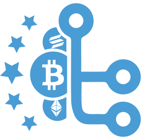
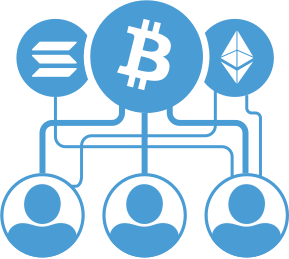
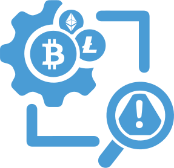
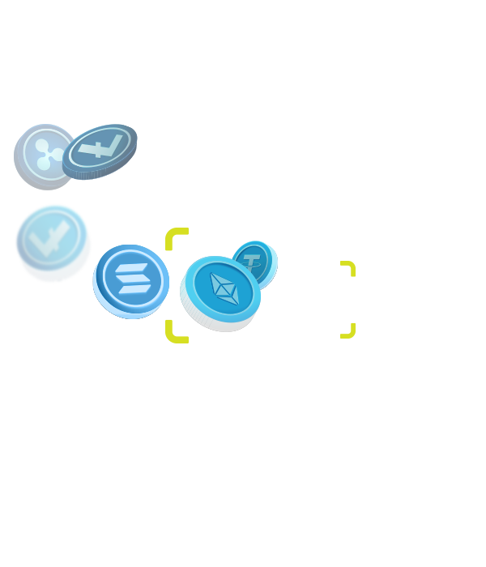
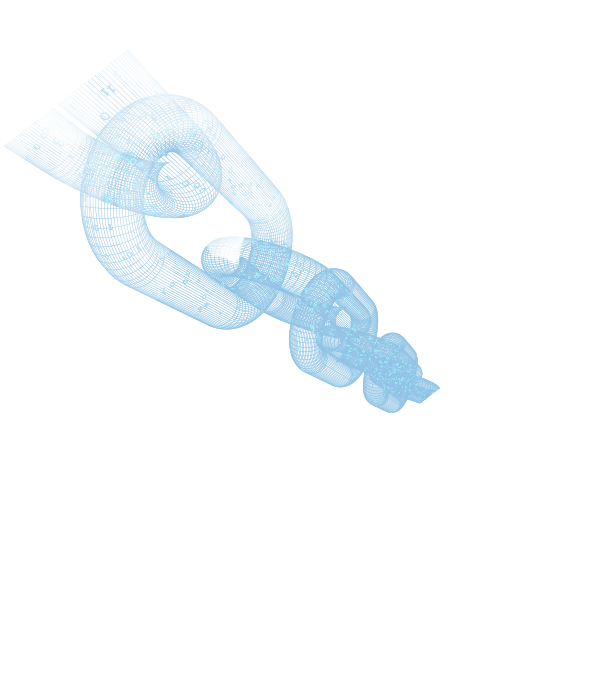
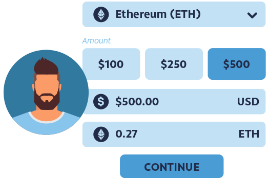
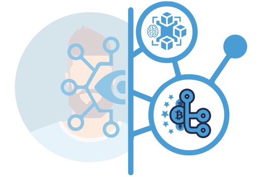
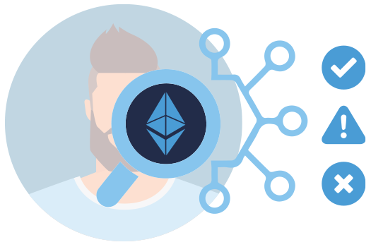
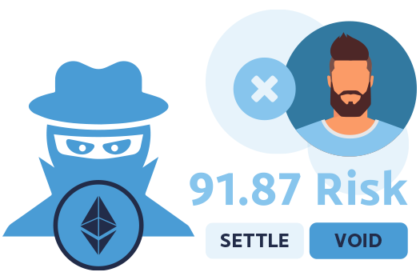

Análisis de Riesgo e Inteligencia Blockchain

Reforzar las transacciones criptográficas
Obtenga una visión clara de la validez de las transacciones criptográficas de sus clientes para una protección superior en las transacciones criptográficas de actividades ilícitas mientras se adapta a los requisitos normativos en rápida evolución.

Crecer con la adopción global de criptomonedas
Con más de 420 millones de usuarios de criptomonedas en todo el mundo, la adopción de criptomonedas sigue siendo sólida. Nuestra plataforma brinda datos centralizados, inteligencia, protección contra fraudes y la agilidad que su negocio necesita para prosperar.
Antifraude criptográfico completo
Los controles KYC en tiempo real, las verificaciones de direcciones de billetera y la inteligencia de blockchain se procesan a través de nuestro análisis de riesgo para identificar cualquier señal de alerta para detener el fraude antes del procesamiento automático.

Reglas de transacciones criptográficas
Nuestro motor de riesgo tiene cientos de parámetros, un conjunto de reglas de riesgo criptocéntricas y secuencias de comandos de forma libre. Las configuraciones para la mitigación de riesgos de varias capas son totalmente personalizables.
Verificar Direcciones Criptográficas
Conozca la Criptografía
Genere confianza con las transacciones criptográficas de sus clientes asegurándose de que sus direcciones criptográficas y billeteras sean acreditables, libres de actividad ilícita y que puedan incluirse en la lista blanca con confianza.
Inteligencia de Cadena de Bloques
Un conjunto integral de blockchain identifica varios factores de riesgo y asociaciones con direcciones criptográficas y billeteras para obtener el más alto nivel de análisis de riesgo criptográfico, precisión y confianza.


Datos Criptográficos Almacenados
Gestión de Datos
Todas las billeteras y direcciones criptográficas verificadas están vinculadas de forma segura con los principales protocolos de seguridad y se almacenan en su perfil de cliente asociado, donde puede ver rápidamente el comportamiento de las transacciones criptográficas, identificar y recibir alertas sobre patrones sospechosos, descubrir múltiples cuentas y administrar blanco y negro y blanco. liza.
Prueba ALD/CFT
Las criptorregulaciones están evolucionando rápidamente. Asegurarse de tener todos los datos KYC del cliente asociados con sus datos criptográficos en billeteras, direcciones y transacciones proporciona una gestión holística desde una única plataforma para respaldar los informes requeridos por los organismos reguladores.
¿Necesitas más cobertura? Active nuestra evaluación AML/CTF para una mayor adherencia al cumplimiento sin integraciones adicionales.
Monitoreo Avanzado
Alertas de Análisis de Riesgo
En función de sus umbrales de riesgo personalizados, reciba puntuaciones de riesgo de inmediato y comprenda los indicadores de riesgo y la actividad sospechosa en cualquier punto del flujo de transacciones criptográficas de su cliente.
Centro de Acción
Centro centralizado de colas de riesgo con capacidades de filtro avanzadas, revisión de fraude con un solo clic, rechazo automático, anulación manual de aprobación o estado fallido y más para agilizar las operaciones.
Widgets del Tablero
Los widgets configurables del tablero de datos en vivo aseguran una vista enfocada de los datos, las conversiones, la actividad, las tasas de aprobación, el volumen promedio y más
Informes B.I.
Obtenga el mejor rendimiento a través de informes granulares personalizados y simulaciones de datos para optimizar las reglas de riesgo por región o mercado.
EXPLORAR MONITOREO
Protección de Transacciones Criptográficas
Todo lo que necesita para KYC, verificar y administrar transacciones criptográficas con confianza.
Inducción
Obtenga un análisis de riesgo de referencia y una puntuación de riesgo de todos los KYC activados.

Transacción
Transacción criptográfica iniciada dentro de los límites establecidos en función de los límites del umbral de riesgo.

Análisis
Las transacciones criptográficas se verifican en tiempo real para garantizar una gran experiencia.

Salida de riesgo
Reciba un estado aprobado, de advertencia o fallido con acciones automatizadas.

Gestionar el riesgo
Control total para anular y gestionar las señales de riesgo desde nuestro centro de acción.
Informes
Tablero en vivo para informes personalizados para un rendimiento óptimo.
Enriquecer la Elaboración de Perfiles y la Mitigación de Riesgos
ID Digital
Un conjunto completo de verificaciones KYC de extremo a extremo con flujos de trabajo para confirmar la identidad del cliente automáticamente y en tiempo real.
I.D. Documento
Proteja la identidad del cliente con la verificación de documentos de identidad emitidos por el gobierno mundial y la detección biométrica de vida en tiempo real.
Cumplimiento ALD
Cumplimiento basado en datos para la protección contra actividades ilegales como el lavado de dinero, el financiamiento del terrorismo o transacciones fraudulentas con facilidad.
Transacción Inteligente
Proteja los ingresos con controles de identidad continuos, verificaciones transaccionales y análisis de riesgos automatizados y basados en criptografía.